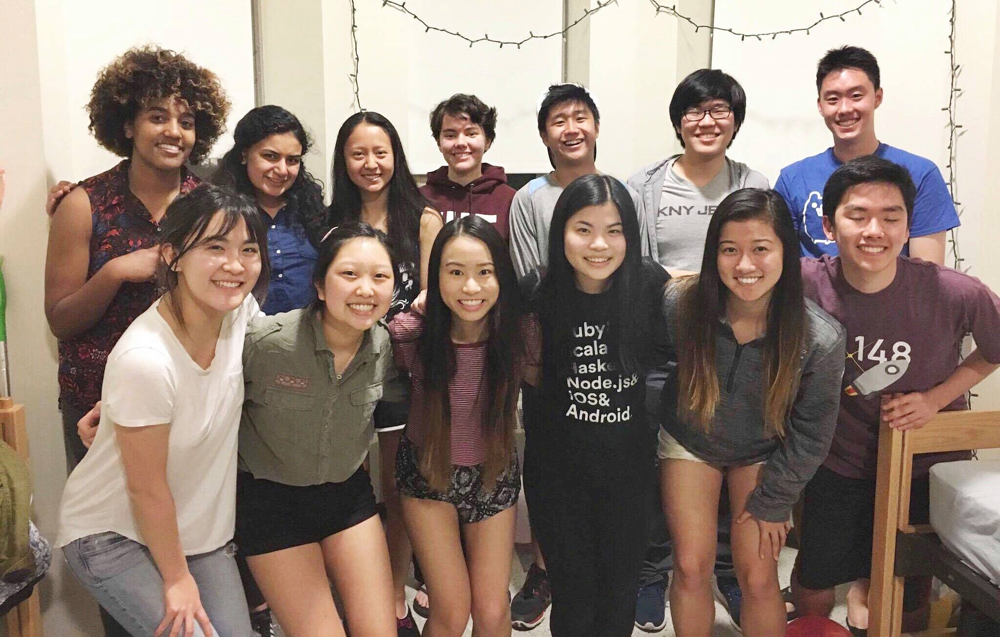

I'm Nanxi (pronounced Nancy) Liu and I'm a junior majoring in 6-3, Computer Science, and I want to become a software engineer. My goal in life is to create amazing things to help the world. I love red pandas, listening to music, hazelnut-flavored things, learning new things, dogs, singing, smiling, and laughing, and I'm always trying to improve myself as a person.
I'm from Rancho Cucamonga, California (near Los Angeles). SoCal is one of my favorite places in the world - I love the warm weather, chill vibes, amazing food, and kind people. I love my friends from home (we call our group CAPOW) and look forward to seeing them every break! We like playing board games, going on food adventures, exploring, and having deep talks.
Currently, I live in Maseeh. My roommate is Addie and she's my best friend and almost like my sister. I love knowing that I can talk to her about anything - we love having deep talks late into the night. We love listening to kpop, laughing at memes and cute dog videos, eating good food, and supporting each other.
My friends at MIT also brighten my life and make all my days so nice. I love spending time with them, whether I'm psetting, eating, or talking to them. I'm thankful for all the positive people I surround myself with, and I think friendship and love make life really beautiful.